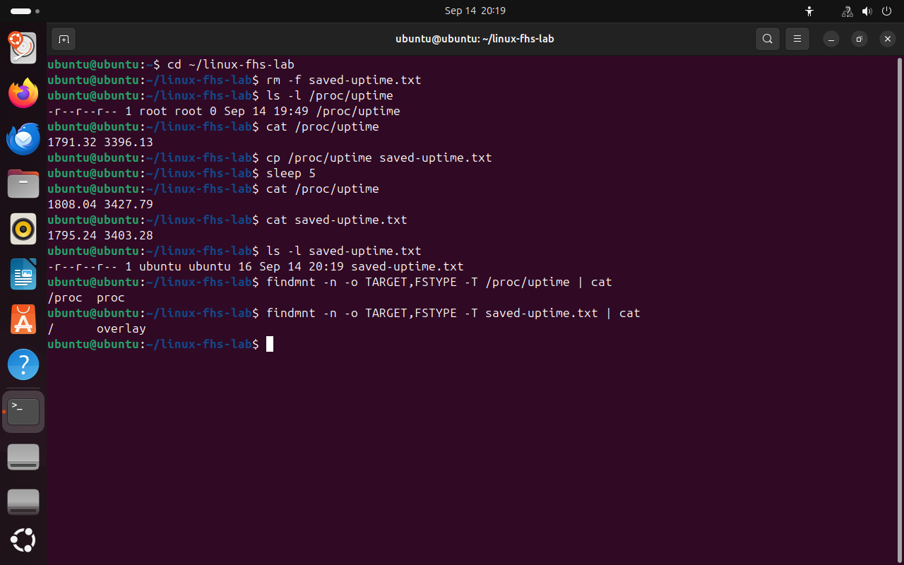

Часть 5 из 8
Устройства и сведения ядра: /dev, /proc, /sys
В этой части рассмотрим каталоги, содержимое которых не хранится на диске: файлы устройств в /dev и сведения о системе, которые ядро предоставляет через /proc и /sys.
5.1 Файлы устройств: /dev
В Linux к устройствам обращаются так же, как к файлам. Для каждого устройства в каталоге /dev есть специальный файл. Когда программа читает или записывает такой файл, ядро передаёт данные драйверу соответствующего устройства. Например, /dev/sda — первый диск целиком, /dev/sda1 — первый раздел на нём.
Файл устройства можно сравнить с розеткой: программа подключается к файлу, а данные уходят к устройству. Программе не нужно знать, как устроен конкретный диск или звуковая карта: она работает с файлом, а остальное делает драйвер.
Обращение к устройству проходит несколько звеньев: программа → файл устройства в /dev → ядро → драйвер → само устройство. Например, программа записи дисков открывает файл /dev/sr0, ядро передаёт данные драйверу оптического привода, а драйвер управляет приводом. Программе достаточно уметь работать с файлами.
Устройства делятся на символьные и блочные. Символьные устройства передают данные потоком байтов, блочные — блоками фиксированного размера, как диски. В выводе ls -l первая буква строки обозначает тип: c — символьное, b — блочное.
Особое устройство /dev/null принимает любые данные и уничтожает их. В него перенаправляют вывод, который не нужен. Поскольку на экране при этом ничего не появляется, успешность команды проверяют по коду завершения: оболочка хранит его в переменной $?, значение 0 означает успех.
Пример. При поиске по всей системе команда find выводит много сообщений «Permission denied» о каталогах, куда у пользователя нет доступа. Чтобы эти сообщения не мешали читать результат, их направляют в /dev/null: find / -name hosts 2>/dev/null.
ls -l /dev/null /dev/zero# сведения об устройствахfile /dev/null# тип объектаprintf "test\n" > /dev/null# записать данные в /dev/nullprintf "exit status: %s\n" "$?"# код завершения предыдущей командыlsblk -o NAME,TYPE,SIZE,MOUNTPOINTS# блочные устройства: диски и разделы
- 1символьное устройство
- 2тип объекта по данным команды file
- 3код завершения 0 — запись выполнена
 Весь снимок ↗
Весь снимок ↗Устройство /dev/null и список блочных устройств виртуальной машины.
Что показывает снимок. /dev/null — символьное устройство; запись в него прошла успешно с кодом 0; lsblk показывает диски и разделы.
Где это пригодится. Код завершения проверяют в скриптах, чтобы понять, выполнилась ли команда. lsblk используют, чтобы найти подключённый диск или флешку перед монтированием.
5.2 Сведения о процессах и системе: /proc
Каталог /proc не находится на диске. На нём смонтирована псевдофайловая система proc: её файлы создаёт ядро, а содержимое формируется в момент чтения. Через эти файлы можно узнать состояние системы: объём памяти, время работы, сведения о каждом запущенном процессе. Для каждого процесса в /proc есть каталог, названный его номером (PID).
Файлы /proc похожи на табло прибытия поездов на вокзале: табло не хранит расписание на месяц вперёд, а показывает текущее положение дел в тот момент, когда вы на него смотрите. Пример. Команды free (сколько свободно памяти) и top (список работающих процессов) берут данные из файлов /proc.
| Путь | Что содержит |
|---|---|
/proc/meminfo | сведения об оперативной памяти |
/proc/uptime | время работы системы в секундах |
/proc/cpuinfo | сведения о процессоре |
/proc/номер процесса/ | каталог конкретного процесса |
/proc/номер процесса/cwd | ссылка на текущий каталог процесса |
/proc/номер процесса/exe | ссылка на исполняемый файл процесса |
head -8 /proc/meminfo# сведения об оперативной памятиecho $$# номер процесса текущей оболочкиreadlink /proc/$$/cwd# текущий каталог этого процессаreadlink /proc/$$/exe# исполняемый файл процессаfindmnt -T /proc/meminfo -o TARGET,SOURCE,FSTYPE# тип файловой системы
- 1общий объём памяти
- 2память, доступная для новых программ
- 3номер процесса оболочки
- 4текущий каталог процесса
- 5файловая система proc
 Весь снимок ↗
Весь снимок ↗Ядро предоставляет сведения о памяти и о процессе оболочки.
Что показывает снимок. Ядро выдаёт сведения о памяти и о процессе оболочки: его номер, текущий каталог и исполняемый файл.
Где это пригодится. Через /proc узнают, сколько памяти свободно и что делает конкретный процесс. На этих файлах основаны системные мониторы и диспетчеры задач.
Отличие файлов /proc от обычных видно на /proc/uptime, где первое число — время работы системы в секундах. Размер файла равен нулю, но при каждом чтении содержимое новое. Если скопировать файл, копия окажется обычным файлом на диске, и её содержимое меняться не будет.
cd ~/linux-fhs-labrm -f saved-uptime.txt# удалить копию от прошлого запускаls -l /proc/uptime# размер файлаcat /proc/uptimecp /proc/uptime saved-uptime.txt# сделать копиюsleep 5# подождать 5 секундcat /proc/uptimecat saved-uptime.txt# содержимое копииls -l saved-uptime.txt# размер копииfindmnt -n -o TARGET,FSTYPE -T /proc/uptime | cat# файловая система оригиналаfindmnt -n -o TARGET,FSTYPE -T saved-uptime.txt | cat# файловая система копии
- 1размер 0 байт
- 2два чтения с интервалом в пять секунд
- 3копия не изменилась
- 4оригинал на proc, копия на обычной файловой системе
{kind=link}

Весь снимок ↗Содержимое /proc/uptime меняется при каждом чтении, содержимое копии — нет.
Что показывает снимок. Размер /proc/uptime равен нулю, но содержимое меняется при каждом чтении; копия на диске не меняется.
Где это пригодится. Сведения из /proc нельзя сохранить копированием на будущее. Чтобы следить за изменениями, файл читают заново, например в скрипте мониторинга.
5.3 Сведения об устройствах: /sys
Каталог /sys — ещё одна псевдофайловая система, sysfs. Если /proc в основном описывает процессы, то /sys описывает устройства и драйверы. Каждый файл в нём содержит одно значение — один параметр устройства. Например, в /sys/class/net перечислены сетевые интерфейсы компьютера.
Пример. На ноутбуке в /sys/class/backlight находятся параметры подсветки экрана, а в /sys/class/power_supply — сведения о батарее: уровень заряда и состояние зарядки. Регулятор яркости в настройках Ubuntu меняет значение именно в таком файле.
ls /sys# разделы /sysls /sys/class/net# список сетевых интерфейсовcat /sys/class/net/lo/operstate# состояние интерфейса lofindmnt -T /sys -o TARGET,SOURCE,FSTYPE
- 1сетевая карта
- 2lo — внутренний интерфейс компьютера
- 3файловая система sysfs
 Весь снимок ↗
Весь снимок ↗Сетевые интерфейсы виртуальной машины в /sys.
Что показывает снимок. В /sys/class/net перечислены сетевые интерфейсы, а файл operstate содержит состояние интерфейса.
Где это пригодится. Через /sys проверяют, какие сетевые карты видит система и включены ли они. Это помогает при настройке и диагностике сети.
Итоги части 5
- Устройства представлены специальными файлами в
/dev;c— символьные,b— блочные. - Код завершения последней команды хранится в
$?, 0 означает успех. /procи/sys— псевдофайловые системы: содержимое их файлов формирует ядро при чтении./procописывает процессы и состояние системы,/sys— устройства.
В отчётСнимок с /proc/uptime и его копией.